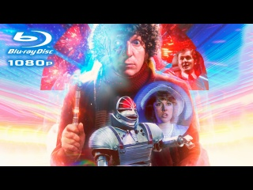
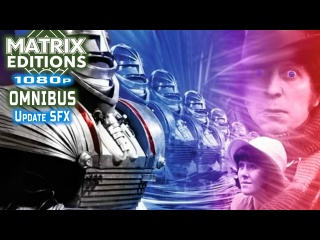
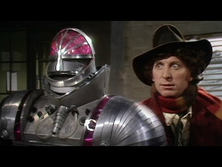
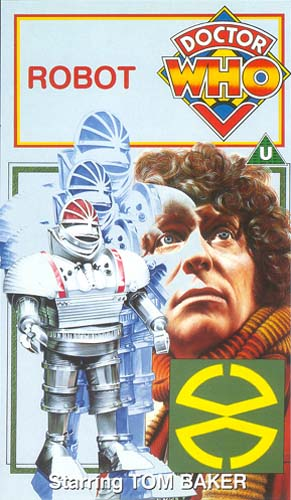
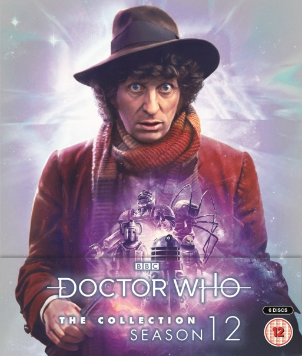
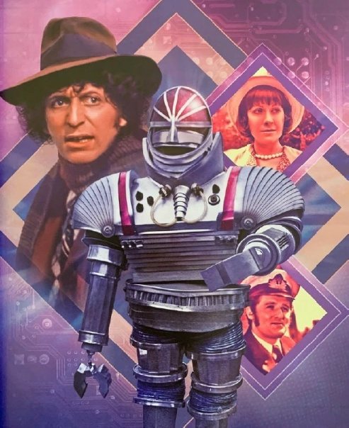
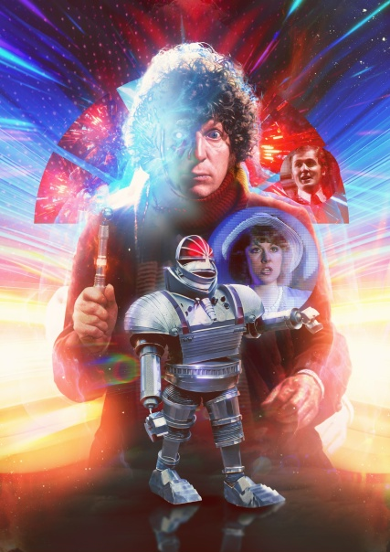

помощник

помощник
* первые 2 эпизода или Original ENG Субтитры: Русские {Елена Жилина} и Английские |  |
|---|---|
с обновлением визуальных эффектов (cunningmunki) * + DVO PARUSSKI на вступлении или Original ENG Субтитры: отсутствуют |  |
или Original ENG Субтитры: отсутствуют |  |
Robot
Дата выхода: 28 декабря 1974 - 18 января 1975
Формат: 4 эпизода по 25 мин.
| | помощник | помощник |
Доктор (уже в исполнении Тома Бейкера) и Сара Джейн расследуют исчезновение учёных и сталкиваются с гигантским роботом K1 — его создали для мирных целей, но заговорщики перепрограммировали машину, чтобы захватить власть над миром. Доктор в пост‑регенерационном состоянии то путает Бригадира с Александром Македонским, то предлагает мармеладки — и всё это на фоне попытки остановить катастрофу. Первая полноценная серия Четвёртого Доктора и дебют Гарри Салливана, который вскоре станет постоянным спутником.
 VHS - февраль 1992 | DVD - 4 июня 2007 |  Blu-ray - 2 июля 2018 * Версия в нашей группе |
|---|

